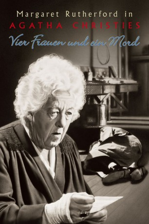

#10785 Miss Marple 4 - Vier Frauen und ein Mord
Alternativ: Murder Most Foul (Englischer Titel)
 
 IMDB-Wertung: 7.2 / 10
IMDB-Wertung: 7.2 / 10  Metascore: 0
Metascore: 0 
Miss Marple auf den Brettern, die die Welt bedeuten: Als sich die kauzige alte Lady um eine Rolle bei einer drittklassigen Theatergruppe bewirbt, geht es ihr natürlich nicht um eine Karriere als Schauspielerin. In Wahrheit hat sie einen furchtbaren Verdacht: Spielt einer ihrer Kollegen die Rolle des Mörders auch im wirklichen Leben...?
Jahr: 1964
Dauer: 86 Minuten
FSK: 12
Land: England Studio: Warner Home VideoTonspuren:
Untertitel:
Auflösung: 1080p (1920x1080) Größe: 7536 MB
Genre: Thriller, Drama, Komödie, Krimi, Mystery
Regisseur: George Pollock
Drehbuch: David Pursall, Jack Seddon, Agatha Christie, Robert W. Service
Soundtrack: Ron Goodwin
Darsteller:
- Margaret Rutherford als Miss Jane Marple
- Ron Moody als H. Driffold Cosgood
- Charles 'Bud' Tingwell als Inspector Craddock
- Megs Jenkins als Mrs. Gladys Thomas
- James Bolam als Bill Hanson
 Francesca Annis als Sheila Upward
Francesca Annis als Sheila Upward- Pauline Jameson als Maureen Summers
- Windsor Davies als Sergeant Brick
- Maurice Good als George Rowton
- Dennis Price als Harris Tumbrill
 Terry Scott als Police Constable Wells
Terry Scott als Police Constable Wells- Susan Richards als Cleaning Lady (uncredited)
- Michael Segal als Stagehand (uncredited)
- Andrew Cruickshank als Justice Crosby
- Ralph Michael als Ralph Summers
- Stringer Davis als Jim Stringer
- Annette Kerr als Dorothy
- Alison Seebohm als Eva McGonigall
- Neil Stacy als Arthur
- Stella Tanner als Mrs. Florrie Harris
- Jack Armstrong als Jury Member (uncredited)
- Sydney Arnold als Vicar (uncredited)
- Fred Davis als Constable (uncredited)
- Eric Francis als Stage Manager (uncredited)
- Lucy Griffiths als Miss Rusty (uncredited)
- Bill Hibbert als Constable (uncredited)
- Arthur Howell als Police Constable in Theatre Box (uncredited)
- Gerry Judge als Police Constable (uncredited)
- Ross Parker als Mr. Strawbridge (uncredited)
- John Wilder als Chief Constable (uncredited)
Datei: X:\4-Tetralogie(M-Z)\Miss Marple\Miss Marple 4 - Vier Frauen und ein Mord (1964, FSK12, 1920x1080).mkv seit 22.02.2019
Festplatte: HD Collection-3(N-Z)-6(A-Z)
 Es gibt insgesamt 7 Filme in der Gruppe '4-Tetralogie(M-Z)\Miss Marple'
Es gibt insgesamt 7 Filme in der Gruppe '4-Tetralogie(M-Z)\Miss Marple'